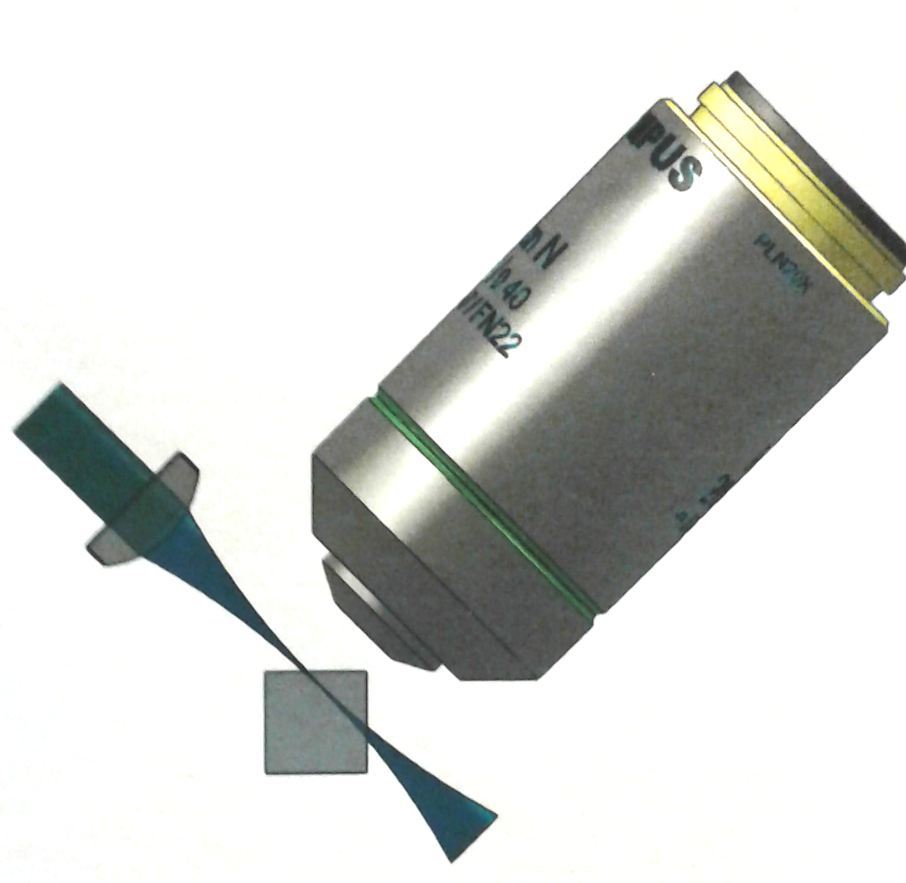

Objective-Coupled Planar Illumination (OCPI) microscopy, uses a thin (~5 microns) sheet of light positioned in the focal plane of the objective. This permits rapid (theoretically, ~10 microseconds/frame) and high signal-to-noise imaging. Because the light sheet is coupled to the objective, the objective may be scanned to perform three-dimensional imaging at high speeds. A further advantage is that photodamage is greatly reduced because illumination is restricted to the focal plane.
